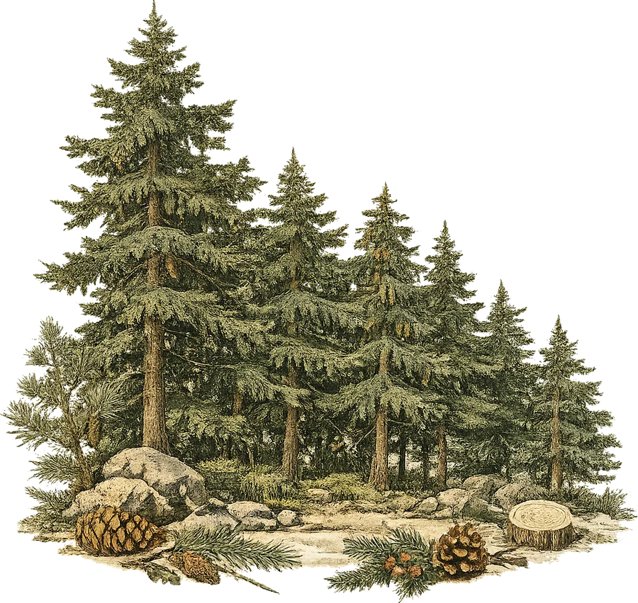
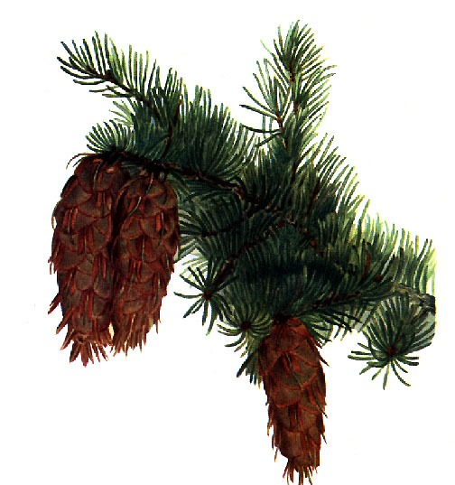

A privately held quantitative trading firm operating in prediction and event markets — venues like Kalshi and Polymarket, where contracts settle on real-world outcomes. We hunt for the places the crowd has mispriced the future.
View the live dashboard→ Opens the live MATES trading desk at mates-trading.com

Hemlock Holdings LLC is a privately held quantitative trading firm operating in prediction and event markets — exchanges like Kalshi and Polymarket, where contracts resolve on real-world outcomes. We hunt for the places the crowd has mispriced the future.
At the core is MATES, our proprietary multi-agent AI trading system. MATES runs an autonomous research desk: independent agents investigate each market from primary sources under a strict, point-in-time discipline, form a probability independent of the market price, and surface only the wagers where the two meaningfully diverge. Every position is sized by risk-managed, time-adjusted rules — never on hunches.